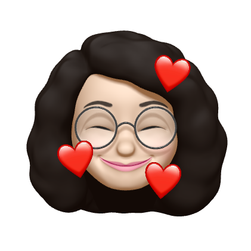
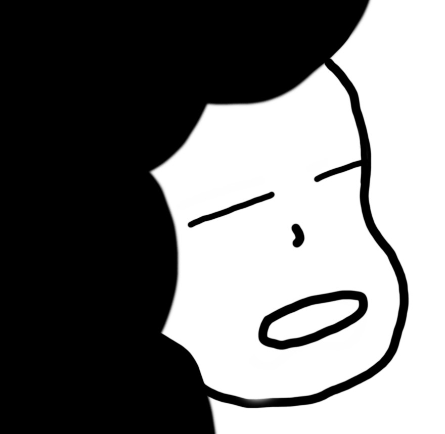

Hello, World!
안녕하세요. 강단입니다.
기술 블로그 깃헙
경험과 목표
Design
전공 : 산업디자인
작은 웹 에이전시에서 웹 디자인과 퍼블리싱을 병행하는 디자이너 였습니다.
Web Publisher
코드로 디자인을 하고 싶다!'는 꿈이 생겨 게임 회사의 웹 퍼블리셔로 경력을 쌓았습니다. 애니메이션을 사용한 모션을 사용한 이벤트 위주의 작업을 했습니다.
그 외 홈페이지 유지, 보수, 포럼사이트 제작, 운영 플랫폼 기획 등을 했습니다.
(돌고 돌아 순정? 이제는 깔끔하게 정렬된 웹 UI를 만들어보고 싶어요)
Developer
문제가 생기면 온 팀원이 함께 해결하고 공유하는 문화.
꽉 막힌 문제를 머리모아 밤새워 풀어냈을 때의 희열.
일을 하면 할 수록 작업하는 과정이 즐거웠고 계속 욕심이 생겨 프론트엔드라는 꿈을 꾸게 되었습니다.
관심 있는 분야는 핀테크/테크핀, 모빌리티, 스마트 팜 분야입니다.
TMI
- 그림 발로 그림
- 떡볶이 좋아하는 맵찔이
- 민초단
- infj (잘 바뀌는 것 같아요)
- "제2의 나라" 킹덤 마스터
- 부산 싸람
8월 말에 서울로 입성합니다 :D
서울 쪽에 연고가 많지 않아 홀로 유학가는 마냥 떨리네요
앞으로 저와 함께할 여정들이 좋은 경험으로 기억될 수 있도록 최선을 다할게요 :0